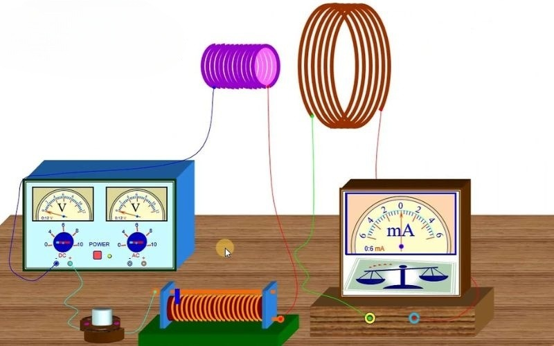
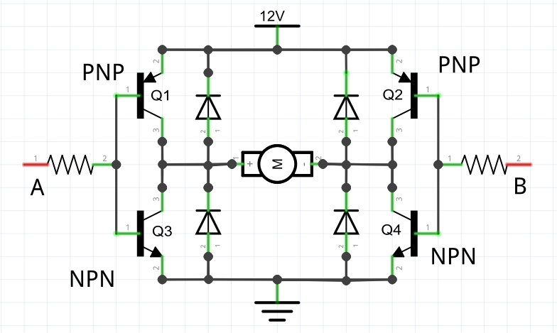

Thiết kế Xe điện Mini: Nền tảng Kỹ thuật Ô tô Điện
Dự án cung cấp cái nhìn toàn diện về cấu trúc và nguyên lý vận hành của phương tiện điện (EVs), từ mạch điều khiển đến cơ cấu truyền động, là bước đệm vững chắc cho ngành công nghiệp ô tô tương lai.

I. Nguyên lý Khoa học và Hệ thống Điện tử
1. Động cơ Điện (DC Motor) - Cảm ứng Điện từ
Động cơ DC chuyển đổi năng lượng điện thành chuyển động quay thông qua nguyên tắc cơ bản của cảm ứng điện từ. Người học áp dụng **Định luật Lorentz** để giải thích lực tác động lên dây dẫn mang dòng điện nằm trong từ trường, tạo ra mô-men xoắn làm quay trục động cơ.

(Sơ đồ minh họa nguyên lý cảm ứng điện từ trong động cơ DC)
2. Hệ thống Năng lượng và Điều khiển
Hệ thống pin (hoặc ắc quy) là trái tim của EV. Phần này giúp rèn luyện kỹ năng **điện tử cơ bản** và **an toàn điện** qua các thành phần:
- Nguồn Điện & Bảo vệ: Lắp ráp mạch điện theo sơ đồ. Nghiên cứu vai trò của **cầu chì (fuse)** trong việc bảo vệ mạch khỏi quá dòng.
- Hệ thống BMS (Battery Management System): Trong EV hiện đại, BMS là bộ não quản lý Pin, theo dõi nhiệt độ, điện áp và dòng điện của từng cell pin để đảm bảo **an toàn** và **tuổi thọ** của bộ pin.
- Bộ Điều khiển Tốc độ (Controller): Bộ phận này dùng kỹ thuật **điều chế độ rộng xung (PWM)** để thay đổi điện áp hiệu dụng cấp cho động cơ, qua đó điều khiển tốc độ và mô-men xoắn.

(Sơ đồ mạch điều khiển động cơ DC sử dụng cầu H và PWM)
II. Kỹ thuật (Engineering) và Toán học (Math) ứng dụng
1. Thiết kế Cơ khí Truyền động (Drivetrain)
Khía cạnh kỹ thuật đòi hỏi phải tối ưu hóa sự chuyển đổi từ mô-men xoắn động cơ sang lực kéo bánh xe. Đây là nơi các phép tính cơ học được áp dụng:
- Tính toán Tỉ số truyền (Gear Ratio): Xác định tỉ lệ bánh răng để tối ưu hóa giữa tốc độ (tối đa) và lực kéo (khả năng tăng tốc). Tỉ số truyền lớn giúp mô-men xoắn đầu ra cao, phù hợp leo dốc. Tỉ số truyền được tính bằng cách chia số răng của bánh răng lớn cho số răng của bánh răng nhỏ.
- Lực kéo tại bánh xe: Mô-men xoắn động cơ sau khi qua hộp số tạo ra lực kéo ($F_{kéo}$) đẩy xe. Lực kéo này được tính bằng cách lấy Mô-men xoắn đầu ra nhân với Tỉ số truyền, rồi chia cho Bán kính bánh xe.
- Hiệu suất: Tính toán hiệu suất tổng thể của hệ thống, bao gồm hiệu suất động cơ và tổn thất năng lượng qua các khớp nối và ma sát.
2. Động lực học và Tầm nhìn Công nghiệp
Dự án mini giúp người học nắm bắt các yếu tố ảnh hưởng đến động lực học của EV, từ đó liên kết với xu hướng lớn trong ngành ô tô:
- Khối lượng và Lực cản: Tính toán ảnh hưởng của khối lượng và lực cản không khí (Air drag) đến công suất tiêu thụ và phạm vi hoạt động của xe.
- Tầm nhìn Bền vững: Phân tích sự khác biệt cơ bản giữa hệ thống truyền động ICE (Internal Combustion Engine) và EV, nhấn mạnh vào lợi ích môi trường và khả năng tái tạo năng lượng (Phanh tái sinh).
- Kết nối: Hiểu rằng các EV thương mại như Tesla hay VinFast đều dựa trên những nguyên lý điện từ và cơ học cơ bản này, nhưng được mở rộng và tích hợp thêm công nghệ điều khiển phức tạp.